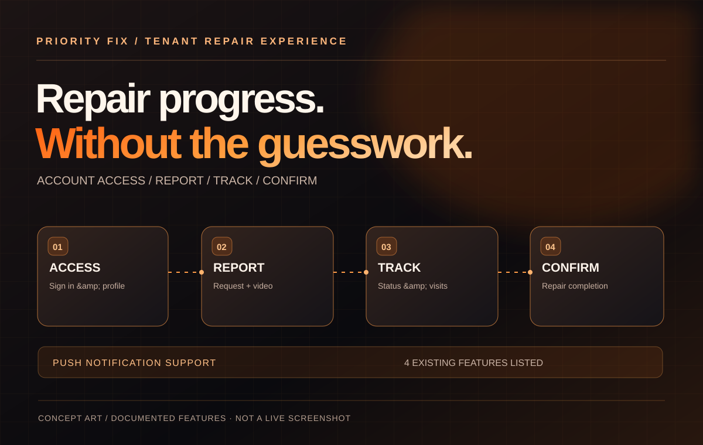

Mobile apps4 MODULES DOCUMENTED
Priority Fix
A tenant-focused repair app with account access, issue reporting with video attachments, repair-status tracking and push notification support.
Tenant accounts · Repair requests · Video attachmentsExplore project